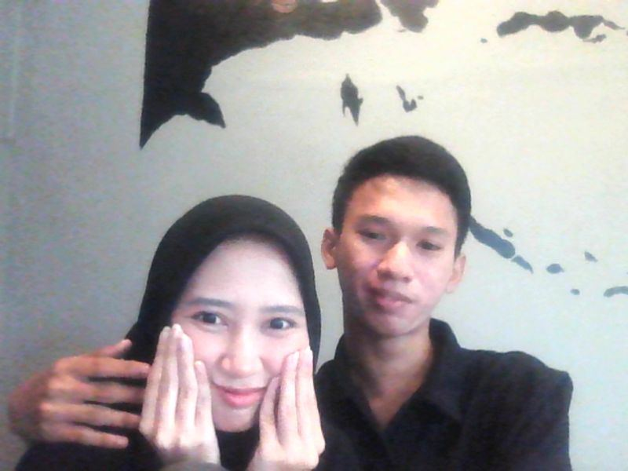
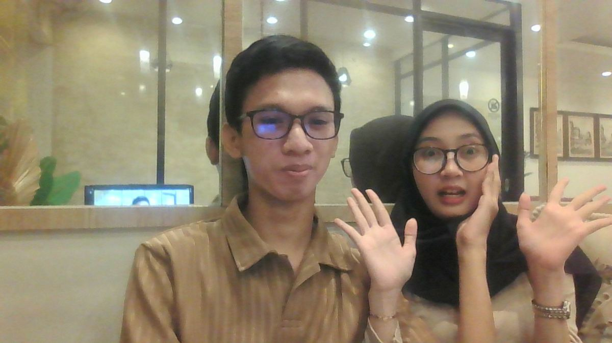
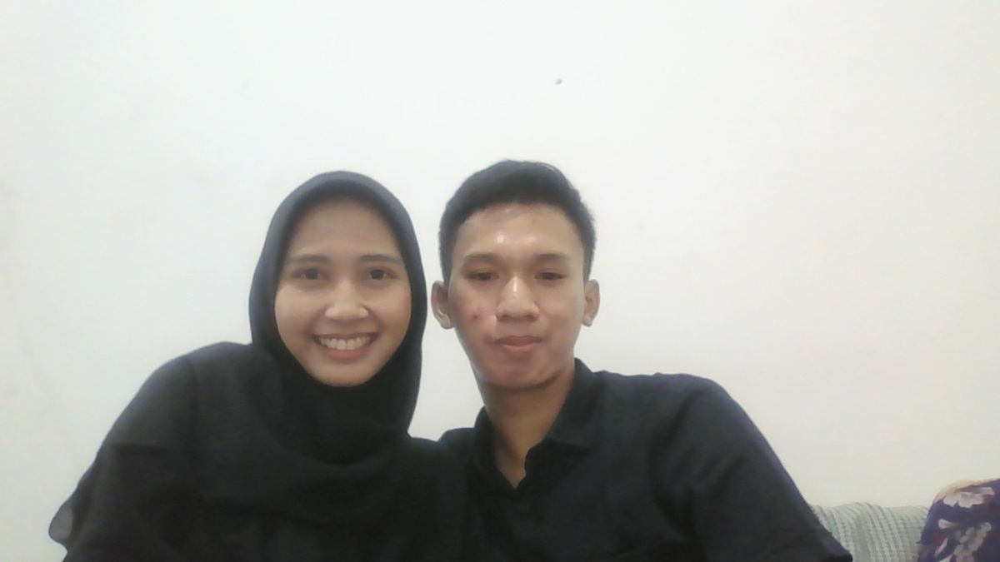
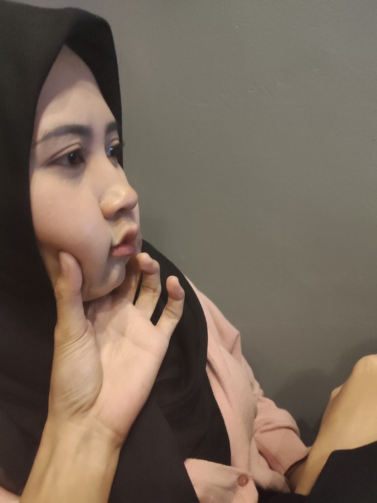
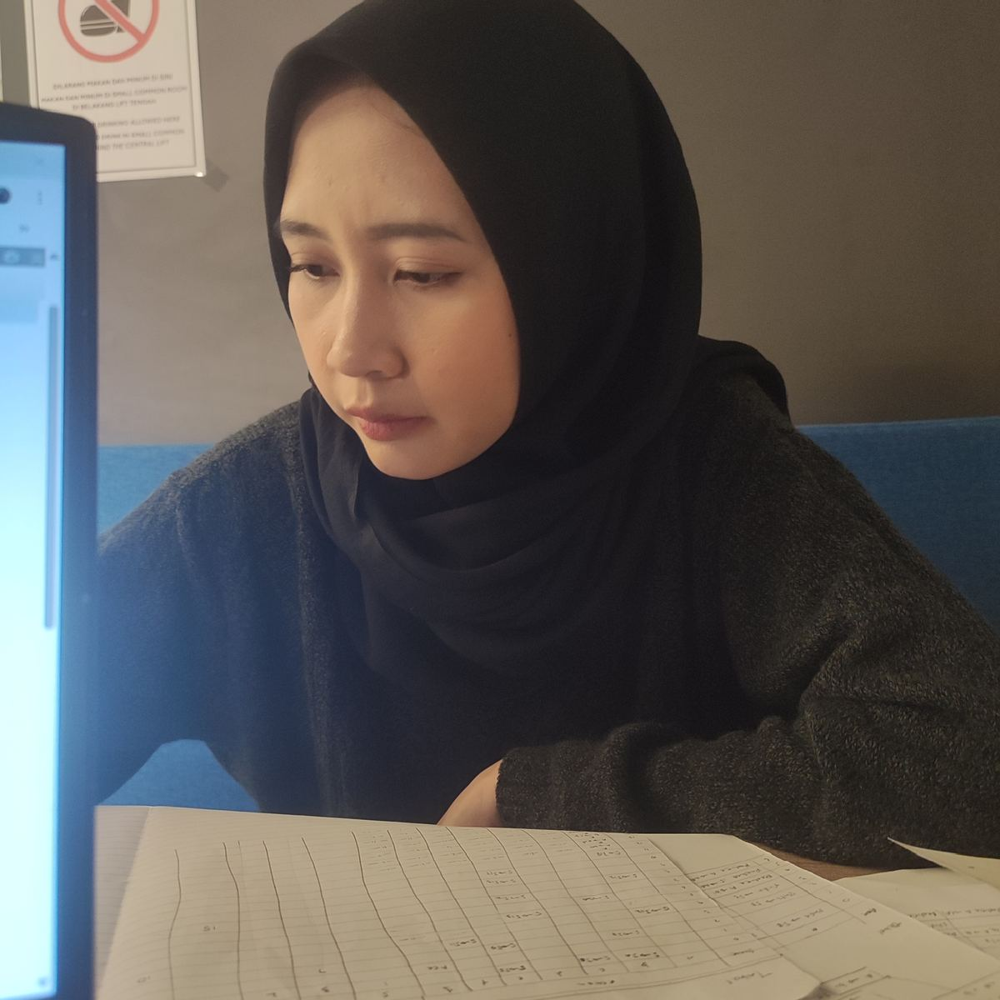
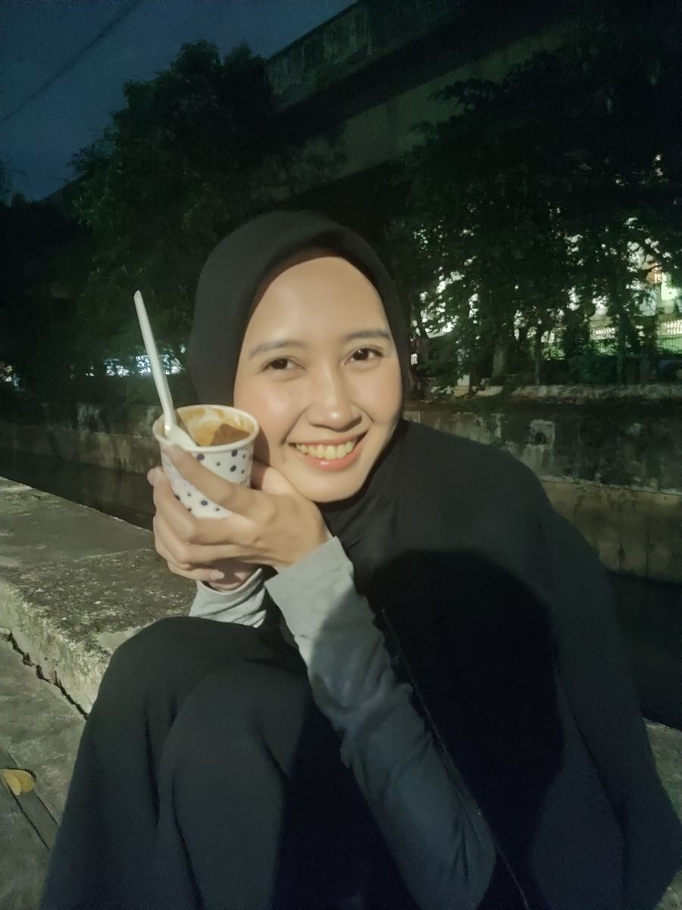
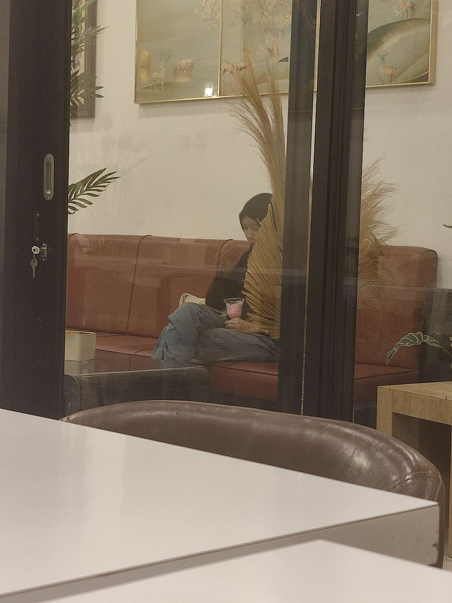
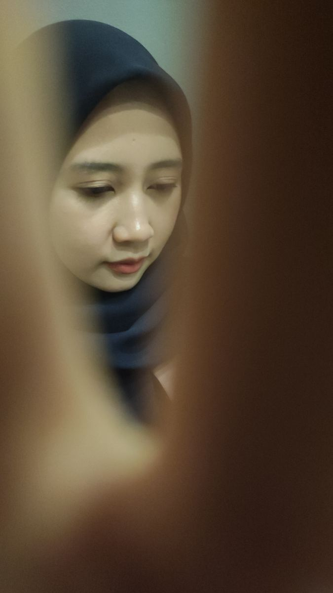
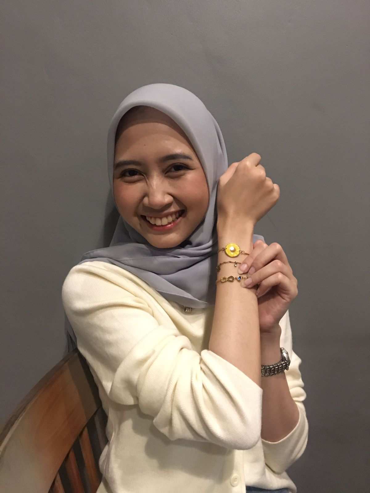

Di sinilah semuanya dimulai — obrolan yang tidak selesai-selesai, janji-janji kecil, dan satu keputusan untuk saling memilih. Dari situ, hari-hari biasa perlahan berubah jadi kenangan yang paling ingin kita putar ulang.



Satu tahun terasa singkat kalau diceritakan, tapi penuh kalau dijalani. Dari hari pertama sampai hari ini, kamu selalu jadi alasan untuk aku berjuang.
Terima kasih sudah tetap memilih aku di setiap keadaan, bukan hanya saat semuanya terasa indah. Terima kasih sudah menjadi tempat pulang yang selalu aku cari, tempat di mana aku bisa menjadi diriku sendiri, merasa dicintai, dan menemukan tenang hanya dengan berada di dekatmu.
Semoga tahun-tahun berikutnya kita jalani dengan cara yang sama: pelan-pelan, jujur, dan selalu berdua.






Dari semua hari dalam hidupku, aku paling suka hari-hari yang ada kamu di dalamnya.